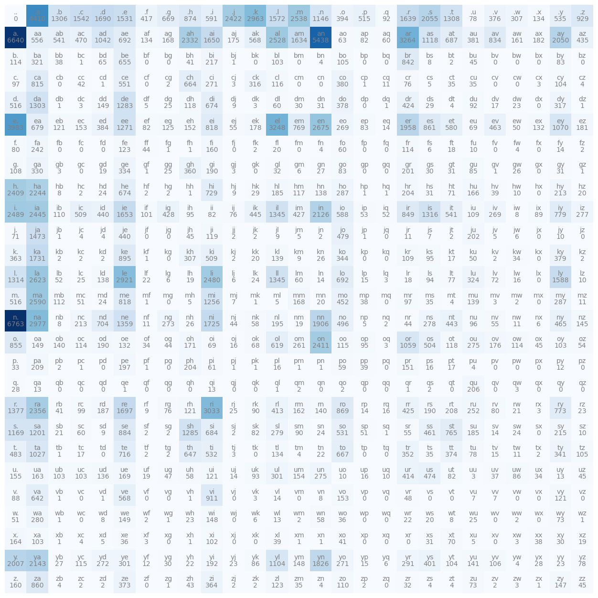
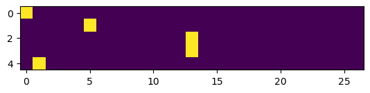

import torch
import string
import numpy as np
import matplotlib.pyplot as pltBigram Character Level Language Model
Basic Introduction of Bigram character-level language model which is one of the first topics to learn when learning about language models.
Introduction
Reading the names from the names.txt which contains the names in lowercase, separated by new line. Dataset is downloaded from https://raw.githubusercontent.com/karpathy/makemore/master/names.txt
with open('names.txt','r') as f:
names = f.read().splitlines()len(names)32033To determine the minimum number of characters and maximum number of characters we use the following code
min(len(w) for w in names), max(len(w) for w in names)(2, 15)We initially used <S> and <E> as the start and end token respectively. But this approach is not useful enough because we can’t have a character that starts before <S> so in the N lookup table there will be a complete row which have 0’s in it.
However instead of using <S> and <E>, substituting it for a single . character which indicates both the start and the end and make slight improvement in our code.
# tokens = ['<S>','<E>'] + list(string.ascii_lowercase)
tokens = ['.'] + list(string.ascii_lowercase)tokens['.',
'a',
'b',
'c',
'd',
'e',
'f',
'g',
'h',
'i',
'j',
'k',
'l',
'm',
'n',
'o',
'p',
'q',
'r',
's',
't',
'u',
'v',
'w',
'x',
'y',
'z']Note string.ascii_lowercase return lowercase alphabets in a single string which we will later use to create a list and append . character. Now len(tokens) will have 27 characters.
string.ascii_lowercase, len(tokens)('abcdefghijklmnopqrstuvwxyz', 27)Now we can’t pass string data to our model we need to convert the characters to the number. Why characters? because it is a character level language model Bigram which means we will feed one character to our model and it will try to predict the next character in a sequence. We can also pass multiple character to our model but this is not the architecture of Bigram.
stoi = {s:i for i,s in enumerate(tokens)} # alphabet as key, integer as value
itos = {i:s for s,i in stoi.items()} # integer as key, alphabet as valuestoi{'.': 0,
'a': 1,
'b': 2,
'c': 3,
'd': 4,
'e': 5,
'f': 6,
'g': 7,
'h': 8,
'i': 9,
'j': 10,
'k': 11,
'l': 12,
'm': 13,
'n': 14,
'o': 15,
'p': 16,
'q': 17,
'r': 18,
's': 19,
't': 20,
'u': 21,
'v': 22,
'w': 23,
'x': 24,
'y': 25,
'z': 26}itos{0: '.',
1: 'a',
2: 'b',
3: 'c',
4: 'd',
5: 'e',
6: 'f',
7: 'g',
8: 'h',
9: 'i',
10: 'j',
11: 'k',
12: 'l',
13: 'm',
14: 'n',
15: 'o',
16: 'p',
17: 'q',
18: 'r',
19: 's',
20: 't',
21: 'u',
22: 'v',
23: 'w',
24: 'x',
25: 'y',
26: 'z'}Sample Bigram Language Model – Now basically A bigram language model is a type of language model that predicts the probability of a word in a sequence based on the previous word. Same is true for the character.
In the word case our vocabulary can be 17000 words or 100000 words based on the size of the problem, which in this case each word is assigned a index to be feed in to the model. But in the character level language model our vocabulary size is total number of character used in our whole dataset which are in this case 26 characters and we append . at the start and end of each name so total of we have 27 characters in our problem so our vocabulary size is 27 characters.
for word in names[:3]:
word = ['.'] + list(word) + ['.']
for ch1, ch2 in zip(word,word[1:]):
print(ch1,ch2). e
e m
m m
m a
a .
. o
o l
l i
i v
v i
i a
a .
. a
a v
v a
a .We are declaring a tensor which we will use to store the counts of our bigrams
N = torch.zeros((27, 27), dtype=torch.int32)In the below code we are counting out of total 27*27 pairs of bigrams, how many times each bigram appeared in our names dataset. Also note than we append . character at the start and at the end of each name.
for w in names:
chs = ['.'] + list(w) + ['.']
for ch1, ch2 in zip(chs, chs[1:]):
ix1 = stoi[ch1]
ix2 = stoi[ch2]
N[ix1, ix2] += 1Then we just get top most appearing bigrams in our dataset
torch.topkis a PyTorch function that returns the top k values and their indices along a specified dimension of a tensor.- In this case,
N.flatten()is used to flatten the 2D tensorNinto a 1D tensor, andtorch.topkis applied to find the top 5 values and their indices in this flattened tensor. top_valuescontains the top 5 values, andtop_indicescontains their corresponding indices in the flattened tensor.
top_values, top_indices = torch.topk(N.flatten(), 5)
print(top_values, top_indices)tensor([6763, 6640, 5438, 4410, 3983], dtype=torch.int32) tensor([378, 27, 41, 1, 135])np.unravel_indexis a NumPy function that converts flat indices into multi-dimensional (2D in this case) indices.top_indicesare the flat indices obtained fromtorch.topk.N.shapeis the shape of the original 2D tensorN.top_indices_2dcontains the 2D indices corresponding to the flat indices.
top_indices_2d = np.unravel_index(top_indices, N.shape)
print(top_indices_2d)(array([14, 1, 1, 0, 5]), array([ 0, 0, 14, 1, 0]))- The below line creates a list of tuples where each tuple contains a string in the specified format and the corresponding value as an integer.
itos[top_indices_2d[0][i]]anditos[top_indices_2d[1][i]]are used to get the characters corresponding to the first and second indices in the 2D indices, respectively.int(top_values[i])is used to convert the values to integers.
top_results = [(f"('{itos[top_indices_2d[0][i]]}', '{itos[top_indices_2d[1][i]]}')", int(top_values[i])) for i in range(5)]
print(top_results)[("('n', '.')", 6763), ("('a', '.')", 6640), ("('a', 'n')", 5438), ("('.', 'a')", 4410), ("('e', '.')", 3983)]Plotting graph
plt.figure(figsize=(16,16))
plt.imshow(N, cmap='Blues')
for i in range(27):
for j in range(27):
chstr = itos[i] + itos[j]
plt.text(j, i, chstr, ha="center", va="bottom", color='gray')
plt.text(j, i, N[i, j].item(), ha="center", va="top", color='gray')
plt.axis('off');
N[0]tensor([ 0, 4410, 1306, 1542, 1690, 1531, 417, 669, 874, 591, 2422, 2963,
1572, 2538, 1146, 394, 515, 92, 1639, 2055, 1308, 78, 376, 307,
134, 535, 929], dtype=torch.int32)Using the p as probability distribution we will use it with torch.multinomial to draw samples from p based on the probability
torch.rand Returns a tensor filled with random numbers from a uniform distribution on the interval [0,1)[0,1)
gen = torch.Generator().manual_seed(2147483647)
p = torch.rand(3, generator=gen)
p /= p.sum()
ptensor([0.6064, 0.3033, 0.0903])torch.multinomial Returns a tensor where each row contains num_samples indices sampled from the multinomial probability distribution located in the corresponding row of tensor p.
# then with the generator, we can sample ints using multinomial
# here ~60% will be 0, ~30% will be 1 and ~10% will be 2
torch.multinomial(p,num_samples=20, replacement=True,generator=gen)tensor([1, 1, 2, 0, 0, 2, 1, 1, 0, 0, 0, 1, 1, 0, 0, 1, 1, 0, 0, 1])# normalize: this gives a probability distribution across the row, and sum=1
p = N[0].float()
p /= p.sum()
p, p.sum()(tensor([0.0000, 0.1377, 0.0408, 0.0481, 0.0528, 0.0478, 0.0130, 0.0209, 0.0273,
0.0184, 0.0756, 0.0925, 0.0491, 0.0792, 0.0358, 0.0123, 0.0161, 0.0029,
0.0512, 0.0642, 0.0408, 0.0024, 0.0117, 0.0096, 0.0042, 0.0167, 0.0290]),
tensor(1.))idx = torch.multinomial(p,num_samples=1, replacement=True,generator=gen).item()
idx, itos[idx](11, 'k')# for the next character, go to row 'e' and so on
seed = 2147483647
gen = torch.Generator().manual_seed(seed)
idx = 0 # start token
for i in range(25):
name = ''
while True:
"""
what if every first character were equally likely?
p = torch.ones(27) / 27.0
this is gonna be garbage indicating untrained.
"""
p = N[idx].float()
p /= p.sum()
idx = torch.multinomial(p,num_samples=1, replacement=True,generator=gen).item()
name += itos[idx]
if idx == 0:
break
print(name)junide.
janasah.
p.
cony.
a.
nn.
kohin.
tolian.
juee.
ksahnaauranilevias.
dedainrwieta.
ssonielylarte.
faveumerifontume.
phynslenaruani.
core.
yaenon.
ka.
jabdinerimikimaynin.
anaasn.
ssorionsush.
dgossmitan.
il.
le.
pann.
that.Now when calculating the log likelihood if any of our probability is 0 our loss will be very much high. So what we will do we will add a very small amount to our N model so that each biagram will atleast be contributing a little to the output
Also instead of calculating p for each row we could calculate it separate
p = (N+1).float()
p /= p.sum(1, keepdims=True)g = torch.Generator().manual_seed(2147483647)
for i in range(5):
out = []
ix = 0
while True:
P = p[ix]
ix = torch.multinomial(P, num_samples=1, replacement=True, generator=g).item()
out.append(itos[ix])
if ix == 0:
break
print(''.join(out))junide.
janasah.
p.
cony.
a.In language models, the negative log-likelihood (NLL) is commonly used as a loss function during training. The goal of a language model is to predict the probability distribution of the next word in a sequence given the context of preceding words.
The NLL measures the difference between the predicted probability distribution and the actual distribution of the next word. Minimizing the NLL during training encourages the model to assign higher probabilities to the correct words. Mathematically, maximizing the log-likelihood is equivalent to minimizing the negative log-likelihood.
log_likelihood = 0.0
n = 0
for w in names:
#for w in ["andrejq"]:
chs = ['.'] + list(w) + ['.']
for ch1, ch2 in zip(chs, chs[1:]):
ix1 = stoi[ch1]
ix2 = stoi[ch2]
prob = p[ix1, ix2]
logprob = torch.log(prob)
log_likelihood += logprob
n += 1
#print(f'{ch1}{ch2}: {prob:.4f} {logprob:.4f}')
print(f'{log_likelihood=}')
nll = -log_likelihood
print(f'{nll=}')
print(f'{nll/n}')log_likelihood=tensor(-559951.5625)
nll=tensor(559951.5625)
2.4543561935424805Creating Training Dataset for Bigrams
ys is basically the shifted version of the xs. Which means training set will contains the previous character and the next character in the name
# create the training set of bigrams (x,y)
xs, ys = [], []
for w in names[:1]:
chs = ['.'] + list(w) + ['.']
for ch1, ch2 in zip(chs, chs[1:]):
ix1 = stoi[ch1]
ix2 = stoi[ch2]
print(ch1, ch2)
xs.append(ix1)
ys.append(ix2)
xs = torch.tensor(xs)
ys = torch.tensor(ys). e
e m
m m
m a
a .xstensor([ 0, 5, 13, 13, 1])ystensor([ 5, 13, 13, 1, 0])import torch.nn.functional as F
xenc = F.one_hot(xs, num_classes=27).float()
xenctensor([[1., 0., 0., 0., 0., 0., 0., 0., 0., 0., 0., 0., 0., 0., 0., 0., 0., 0.,
0., 0., 0., 0., 0., 0., 0., 0., 0.],
[0., 0., 0., 0., 0., 1., 0., 0., 0., 0., 0., 0., 0., 0., 0., 0., 0., 0.,
0., 0., 0., 0., 0., 0., 0., 0., 0.],
[0., 0., 0., 0., 0., 0., 0., 0., 0., 0., 0., 0., 0., 1., 0., 0., 0., 0.,
0., 0., 0., 0., 0., 0., 0., 0., 0.],
[0., 0., 0., 0., 0., 0., 0., 0., 0., 0., 0., 0., 0., 1., 0., 0., 0., 0.,
0., 0., 0., 0., 0., 0., 0., 0., 0.],
[0., 1., 0., 0., 0., 0., 0., 0., 0., 0., 0., 0., 0., 0., 0., 0., 0., 0.,
0., 0., 0., 0., 0., 0., 0., 0., 0.]])xenc.shapetorch.Size([5, 27])plt.imshow(xenc)<matplotlib.image.AxesImage at 0x7f4cb165bb90>
xenc.dtypetorch.float32W = torch.randn((27, 27))
xenc @ Wtensor([[-0.6121, 0.0792, -0.6813, -1.4389, 0.3476, -0.7554, -0.0311, -0.4285,
-0.9945, -0.3620, 1.1535, 1.0019, 0.1942, -1.2011, -0.3320, -0.7448,
0.2188, 0.1101, -1.1942, 0.2223, -0.3493, -0.1568, 0.1647, 0.0068,
-1.4091, 1.0483, 1.4028],
[-0.9926, 0.2868, -0.4810, 0.2572, 1.1087, 1.4877, 0.5212, 0.7704,
0.1191, 0.4504, 1.4064, -0.8934, -0.1128, -0.0778, 0.5568, -0.5619,
-0.5935, -0.3566, -0.0470, -0.5065, 1.1515, -0.3277, -1.1372, -0.8816,
-1.1635, -1.0060, -0.4768],
[ 0.6945, 1.3994, 0.1112, 0.3696, -2.0318, 0.8638, 0.3667, 0.7193,
0.4077, -0.3856, -0.1961, -1.0752, 0.9568, -1.6473, -2.1890, 0.6441,
0.3363, -2.1826, -1.2316, -0.8693, -0.3052, -1.0200, 0.0095, -0.1961,
0.6888, 0.7063, -0.9632],
[ 0.6945, 1.3994, 0.1112, 0.3696, -2.0318, 0.8638, 0.3667, 0.7193,
0.4077, -0.3856, -0.1961, -1.0752, 0.9568, -1.6473, -2.1890, 0.6441,
0.3363, -2.1826, -1.2316, -0.8693, -0.3052, -1.0200, 0.0095, -0.1961,
0.6888, 0.7063, -0.9632],
[-0.5563, -0.5197, 0.3712, 0.0050, 1.8375, 1.0533, -0.8577, 1.3217,
0.1840, 0.9304, -0.6296, 0.1094, -1.2615, -1.0253, -0.1580, 1.1305,
1.7722, 0.8831, -0.6096, 0.2606, 0.0242, -0.9650, -1.0171, 0.9944,
1.0160, 0.9089, 0.2120]])logits = xenc @ W # log-counts
counts = logits.exp() # equivalent N
probs = counts / counts.sum(1, keepdims=True)
probs, logits.shape(tensor([[0.0179, 0.0356, 0.0167, 0.0078, 0.0466, 0.0155, 0.0319, 0.0215, 0.0122,
0.0229, 0.1044, 0.0897, 0.0400, 0.0099, 0.0236, 0.0156, 0.0410, 0.0368,
0.0100, 0.0411, 0.0232, 0.0282, 0.0388, 0.0332, 0.0080, 0.0940, 0.1339],
[0.0106, 0.0381, 0.0177, 0.0370, 0.0867, 0.1266, 0.0482, 0.0618, 0.0322,
0.0449, 0.1167, 0.0117, 0.0256, 0.0265, 0.0499, 0.0163, 0.0158, 0.0200,
0.0273, 0.0172, 0.0905, 0.0206, 0.0092, 0.0118, 0.0089, 0.0105, 0.0178],
[0.0619, 0.1254, 0.0346, 0.0448, 0.0041, 0.0734, 0.0446, 0.0635, 0.0465,
0.0210, 0.0254, 0.0106, 0.0805, 0.0060, 0.0035, 0.0589, 0.0433, 0.0035,
0.0090, 0.0130, 0.0228, 0.0112, 0.0312, 0.0254, 0.0616, 0.0627, 0.0118],
[0.0619, 0.1254, 0.0346, 0.0448, 0.0041, 0.0734, 0.0446, 0.0635, 0.0465,
0.0210, 0.0254, 0.0106, 0.0805, 0.0060, 0.0035, 0.0589, 0.0433, 0.0035,
0.0090, 0.0130, 0.0228, 0.0112, 0.0312, 0.0254, 0.0616, 0.0627, 0.0118],
[0.0119, 0.0124, 0.0302, 0.0209, 0.1308, 0.0597, 0.0088, 0.0781, 0.0250,
0.0528, 0.0111, 0.0232, 0.0059, 0.0075, 0.0178, 0.0645, 0.1225, 0.0504,
0.0113, 0.0270, 0.0213, 0.0079, 0.0075, 0.0563, 0.0575, 0.0517, 0.0257]]),
torch.Size([5, 27]))probs[0]tensor([0.0179, 0.0356, 0.0167, 0.0078, 0.0466, 0.0155, 0.0319, 0.0215, 0.0122,
0.0229, 0.1044, 0.0897, 0.0400, 0.0099, 0.0236, 0.0156, 0.0410, 0.0368,
0.0100, 0.0411, 0.0232, 0.0282, 0.0388, 0.0332, 0.0080, 0.0940, 0.1339])probs[0].shapetorch.Size([27])probs[0].sum()tensor(1.)Summary
xstensor([ 0, 5, 13, 13, 1])ystensor([ 5, 13, 13, 1, 0])# randomly initialize 27 neurons' weights. each neuron receives 27 inputs
g = torch.Generator().manual_seed(2147483647)
W = torch.randn((27, 27), generator=g)xenc = F.one_hot(xs, num_classes=27).float() # input to the network: one-hot encoding
logits = xenc @ W # predict log-counts
counts = logits.exp() # counts, equivalent to N
probs = counts / counts.sum(1, keepdims=True) # probabilities for next character
# btw: the last 2 lines here are together called a 'softmax'probs.shapetorch.Size([5, 27])nlls = torch.zeros(5)
for i in range(5):
# i-th bigram:
x = xs[i].item() # input character index
y = ys[i].item() # label character index
print('--------')
print(f'bigram example {i+1}: {itos[x]}{itos[y]} (indexes {x},{y})')
print('input to the neural net:', x)
print('output probabilities from the neural net:', probs[i])
print('label (actual next character):', y)
p = probs[i, y]
print('probability assigned by the net to the the correct character:', p.item())
logp = torch.log(p)
print('log likelihood:', logp.item())
nll = -logp
print('negative log likelihood:', nll.item())
nlls[i] = nll
print('=========')
print('average negative log likelihood, i.e. loss =', nlls.mean().item())--------
bigram example 1: .e (indexes 0,5)
input to the neural net: 0
output probabilities from the neural net: tensor([0.0607, 0.0100, 0.0123, 0.0042, 0.0168, 0.0123, 0.0027, 0.0232, 0.0137,
0.0313, 0.0079, 0.0278, 0.0091, 0.0082, 0.0500, 0.2378, 0.0603, 0.0025,
0.0249, 0.0055, 0.0339, 0.0109, 0.0029, 0.0198, 0.0118, 0.1537, 0.1459])
label (actual next character): 5
probability assigned by the net to the the correct character: 0.01228625513613224
log likelihood: -4.399273872375488
negative log likelihood: 4.399273872375488
--------
bigram example 2: em (indexes 5,13)
input to the neural net: 5
output probabilities from the neural net: tensor([0.0290, 0.0796, 0.0248, 0.0521, 0.1989, 0.0289, 0.0094, 0.0335, 0.0097,
0.0301, 0.0702, 0.0228, 0.0115, 0.0181, 0.0108, 0.0315, 0.0291, 0.0045,
0.0916, 0.0215, 0.0486, 0.0300, 0.0501, 0.0027, 0.0118, 0.0022, 0.0472])
label (actual next character): 13
probability assigned by the net to the the correct character: 0.018050700426101685
log likelihood: -4.014570713043213
negative log likelihood: 4.014570713043213
--------
bigram example 3: mm (indexes 13,13)
input to the neural net: 13
output probabilities from the neural net: tensor([0.0312, 0.0737, 0.0484, 0.0333, 0.0674, 0.0200, 0.0263, 0.0249, 0.1226,
0.0164, 0.0075, 0.0789, 0.0131, 0.0267, 0.0147, 0.0112, 0.0585, 0.0121,
0.0650, 0.0058, 0.0208, 0.0078, 0.0133, 0.0203, 0.1204, 0.0469, 0.0126])
label (actual next character): 13
probability assigned by the net to the the correct character: 0.026691533625125885
log likelihood: -3.623408794403076
negative log likelihood: 3.623408794403076
--------
bigram example 4: ma (indexes 13,1)
input to the neural net: 13
output probabilities from the neural net: tensor([0.0312, 0.0737, 0.0484, 0.0333, 0.0674, 0.0200, 0.0263, 0.0249, 0.1226,
0.0164, 0.0075, 0.0789, 0.0131, 0.0267, 0.0147, 0.0112, 0.0585, 0.0121,
0.0650, 0.0058, 0.0208, 0.0078, 0.0133, 0.0203, 0.1204, 0.0469, 0.0126])
label (actual next character): 1
probability assigned by the net to the the correct character: 0.07367686182260513
log likelihood: -2.6080665588378906
negative log likelihood: 2.6080665588378906
--------
bigram example 5: a. (indexes 1,0)
input to the neural net: 1
output probabilities from the neural net: tensor([0.0150, 0.0086, 0.0396, 0.0100, 0.0606, 0.0308, 0.1084, 0.0131, 0.0125,
0.0048, 0.1024, 0.0086, 0.0988, 0.0112, 0.0232, 0.0207, 0.0408, 0.0078,
0.0899, 0.0531, 0.0463, 0.0309, 0.0051, 0.0329, 0.0654, 0.0503, 0.0091])
label (actual next character): 0
probability assigned by the net to the the correct character: 0.014977526850998402
log likelihood: -4.201204299926758
negative log likelihood: 4.201204299926758
=========
average negative log likelihood, i.e. loss = 3.7693049907684326Optimization
xs, ys = [], []
for w in names:
chs = ['.'] + list(w) + ['.']
for ch1, ch2 in zip(chs, chs[1:]):
ix1 = stoi[ch1]
ix2 = stoi[ch2]
xs.append(ix1)
ys.append(ix2)
xs = torch.tensor(xs)
ys = torch.tensor(ys)
num = xs.nelement()
print('number of examples: ', num)
# initialize the 'network'
g = torch.Generator().manual_seed(2147483647)
W = torch.randn((27, 27), generator=g, requires_grad=True)number of examples: 228146xstensor([ 0, 5, 13, ..., 25, 26, 24])xs.shapetorch.Size([228146])ystensor([ 5, 13, 13, ..., 26, 24, 0])ys.shapetorch.Size([228146])xenc = F.one_hot(xs, num_classes=27).float()
F.one_hot(xs, num_classes=27)converts the input sequencexsinto a one-hot encoded representation. Each element inxsis replaced by a one-hot vector with a length of 27 (assuming 27 classes or tokens)..float()converts the one-hot encoded tensor to floating-point format, which is often required for further operations.
logits = xenc @ W # predict log-counts - @ is the matrix multiplication operator. It calculates the dot product of the one-hot encoded input xenc and the weight matrix W. - logits represents the predicted log-counts for each class.
counts = logits.exp() # counts, equivalent to N - logits.exp() exponentiates the predicted log-counts, converting them into counts. This step is common in models where the output is interpreted as log-probabilities.
probs = counts / counts.sum(1, keepdims=True) - counts.sum(1, keepdims=True) computes the sum of counts along the second dimension, ensuring that the result has the same shape as counts. - probs is the probability distribution over the classes for the next character, obtained by normalizing the counts.
loss = -probs[torch.arange(num), ys].log().mean() + 0.01 * (W ** 2).mean() - The first part computes the negative log-likelihood loss. It selects the log-probabilities corresponding to the true labels ys and computes their negative mean. - The second part adds a regularization term, penalizing large values in the weight matrix W.
# backward pass
W.grad = None # set to zero the gradient
loss.backward()W.grad = Noneinitializes the gradient of the weight matrix to zero before computing the backward pass.loss.backward()computes the gradients of the loss with respect to the parameters using backpropagation.
# update
W.data += -50 * W.grad- This performs a gradient descent update. It subtracts a multiple of the gradient from the current weight values to update them.
- The learning rate is represented by the value
-50. The negative sign indicates that it’s a gradient descent step.
# gradient descent
for k in range(100):
# forward pass
xenc = F.one_hot(xs, num_classes=27).float() # input to the network: one-hot encoding
logits = xenc @ W # predict log-counts
counts = logits.exp() # counts, equivalent to N
probs = counts / counts.sum(1, keepdims=True) # probabilities for next character
loss = -probs[torch.arange(num), ys].log().mean() + 0.01*(W**2).mean()
print(loss.item())
# backward pass
W.grad = None # set to zero the gradient
loss.backward()
# update
W.data += -50 * W.grad3.768618583679199
3.3788068294525146
3.161090850830078
3.0271859169006348
2.9344842433929443
2.867231607437134
2.8166542053222656
2.777146577835083
2.745253801345825
2.7188305854797363
2.696505308151245
2.6773719787597656
2.6608052253723145
2.6463515758514404
2.633665084838867
2.622471570968628
2.6125476360321045
2.6037068367004395
2.595794916152954
2.5886807441711426
2.5822560787200928
2.576429843902588
2.5711236000061035
2.566272735595703
2.5618226528167725
2.5577261447906494
2.5539441108703613
2.550442695617676
2.5471930503845215
2.5441699028015137
2.5413522720336914
2.538722038269043
2.536262035369873
2.5339579582214355
2.531797409057617
2.529768228530884
2.527860164642334
2.5260636806488037
2.5243704319000244
2.522773265838623
2.52126407623291
2.519836664199829
2.5184857845306396
2.5172054767608643
2.515990734100342
2.5148372650146484
2.5137407779693604
2.512697696685791
2.511704921722412
2.5107579231262207
2.509855031967163
2.5089924335479736
2.5081679821014404
2.507380485534668
2.5066258907318115
2.5059030055999756
2.5052103996276855
2.5045459270477295
2.503908157348633
2.503295421600342
2.5027060508728027
2.5021398067474365
2.501594305038452
2.5010695457458496
2.500563383102417
2.500075578689575
2.4996049404144287
2.499150514602661
2.4987120628356934
2.49828839302063
2.4978787899017334
2.4974827766418457
2.4970996379852295
2.4967293739318848
2.496370315551758
2.4960227012634277
2.4956860542297363
2.4953596591949463
2.4950432777404785
2.494736433029175
2.494438886642456
2.494149684906006
2.4938690662384033
2.4935965538024902
2.4933321475982666
2.493075132369995
2.4928252696990967
2.492582321166992
2.4923462867736816
2.492116689682007
2.4918932914733887
2.491675853729248
2.491464376449585
2.491258382797241
2.491057872772217
2.4908623695373535
2.4906723499298096
2.4904870986938477
2.4903063774108887
2.4901304244995117Now to get sample from the model we start from the 0 as index which is . character and pass it to our model and use torch.multinomial to draw sample from the distribution calculated by the last layer of our nerual network model
# finally, sample from the 'neural net' model
g = torch.Generator().manual_seed(2147483647)
for i in range(5):
out = []
ix = 0
while True:
xenc = F.one_hot(torch.tensor([ix]), num_classes=27).float()
logits = xenc @ W # predict log-counts
counts = logits.exp() # counts, equivalent to N
p = counts / counts.sum(1, keepdims=True) # probabilities for next character
ix = torch.multinomial(p, num_samples=1, replacement=True, generator=g).item()
out.append(itos[ix])
if ix == 0:
break
print(''.join(out))junide.
janasah.
p.
cfay.
a.